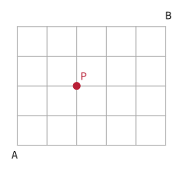

ホーム ＞ 数学A ＞ 場合の数（順列・組合せ）
例題 4場合の数と確率 最短経路の数（通らない点がある場合）
図のように、東西に5本、南北に4本の道が碁盤の目状に走っている。A 地点から B 地点まで、遠まわりせずに行く道順のうち、点 P を通らないものは何通りか。

【答案（テストに書く形）】
\[66\ \text{通り}\]答
ホーム ＞ 数学A ＞ 場合の数（順列・組合せ）
図のように、東西に5本、南北に4本の道が碁盤の目状に走っている。A 地点から B 地点まで、遠まわりせずに行く道順のうち、点 P を通らないものは何通りか。

【答案（テストに書く形）】
\[66\ \text{通り}\]答